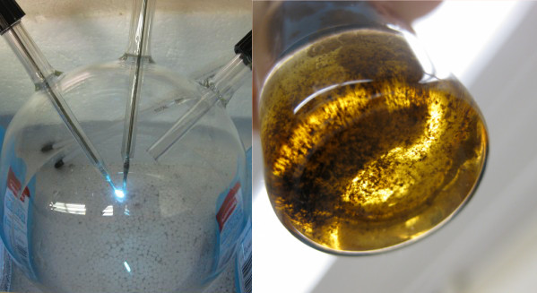

Wet
---Hard---
Soft
ALife
Prebiotic chemistry: generating the precursors of living systems

Prebiotic chemistry (amino acids and other organic compounds, right) generated in a Miller-Urey spark discharge instrument (left) in Rodriguez et al.
2019, NASA funded research.